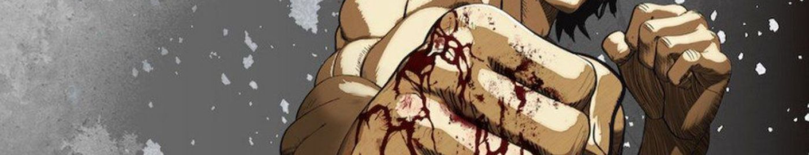

КЕНГУР АСУРА Я РАСКАЖУ ПРО ТРЕХ ПЕРСОНАЖЕЙ

это главный герой Ома Токита он дереться за кампанию Ямашита он пока прошол только 3 этап его стиль боя нико характре спокойный но если его разазслит у него появиться режим берсерк

Самый злой персонаж и жестокий его характре без пощадный у Райна только одна способнасть и это секретная техника его семьи

Она сестра Раяна она владеит техникой свое семьи она любит нашего героя

Имя: Кано Агито ("加納 アギト")
Псевдонимы/Прозвища: Пятый Клык Мецудо ("五代目滅堂の牙"), Клык ("牙"), Император боёв кэнган ("拳願仕合の帝王"), Сильнейший в мире подпольных боёв ("裏武術界最強の男")
Происхождение: Kenganverse
Уровень сил: 9
Пол: Мужской
Классификация: Сверхчеловек, пятый «Клык Мецудо», бывший ученик другого Токиты Нико и выживший в ритуале Гу, мастер Бесформенной стойки, наемный боец ассоциации «Кэнган», аффилированный боец банка «Даиниппон», участник и полуфиналист турнира «Аннигиляция», участник турнира «Ассоциация Кенган против Чистилища»
Возраст: Неизвестен
Умения, силы и способности: Сверхчеловеческие физические характеристики, рукопашный бой, копирование (навыков и техник), реактивная эволюция (способен неестественно быстро адаптироваться к боевому стилю противника и выработать контрмеры против него), контроль тела (тип 1), иллюзии (тип 1 - за счёт Пре-инициативы и Бесформенной стойки), ударные волны, множественность личностей, ловкость, аура (подавления, устрашения, харизмы), регенерация (тип 2), экстрасенсорное восприятие (псевдо-предвидение), невероятная сила воли, брутальность, манипуляции пафосом
Слабые стороны: Ранее из-за гордости был склонен ограничивать себя в использовании полного арсенала своих способностей и танковать атаки; поп-культура
Разрушительный потенциал: Уровень строения+, уровень здания на пробой, уровень здания+ на пробой «Ударом Дракона»

Кирю Сэцуна (桐き生りゅう 刹せつ那な, Кирю Сэцуна; "Сэцуна Кирю"), также известная как Прекрасное Чудовище (美び獣じゅう, Биджу), является загадочной личностью, чья история тесно переплетена с историей Токиты Омы. Он был аффилированным бойцом группы Koyo Academy во время самого последнего турнира по уничтожению Кенгана. Через два года после турнира он внезапно появляется снова, взаимодействуя с Гао Рюки.